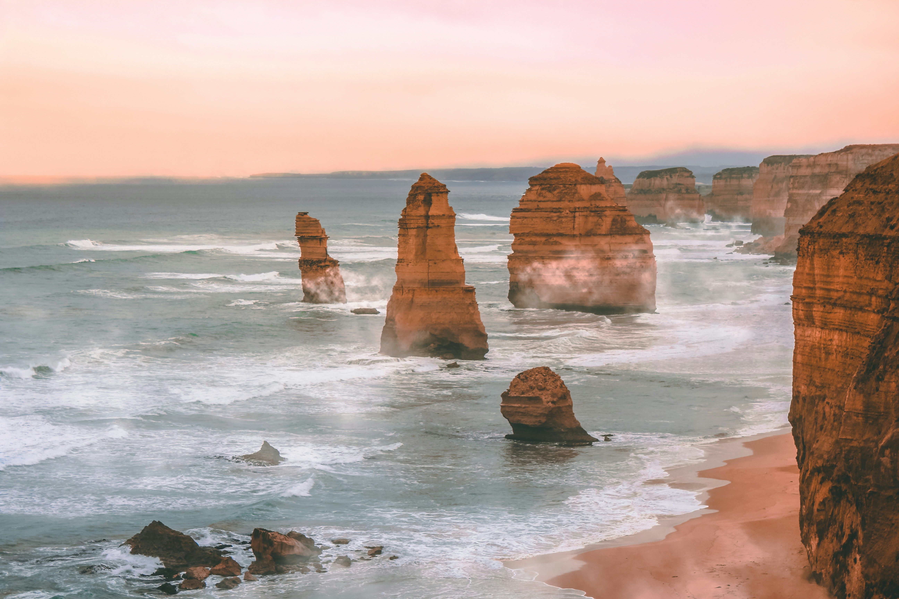

Viaja y captura: consejos para fotografiar en movimiento
La vida en
foco
Con una pasión por la fotografía y el viaje, he recorrido el mundo en busca de momentos únicos y emocionantes. En esta página, te muestro mis fotografías favoritas de mis aventuras con Pluto y te comparto mis consejos y técnicas para capturar tus propios instantes de viaje.
Aprende a fotografiarte solo en tus viajes
¿Cómo capturar la esencia de las culturas en una foto?

3 consejos para fotografías impresionantes de tus viajes
¿Cómo contar historias através de la fotografía?

La noche en la ciudad: consejos para fotografiar la iluminación
Tips para fotografiar tus aventuras en el extranjero

¿Qué equipo fotográfico es el mejor para un viaje?

Los mejores editores de fotos y cómo usarlos adecuadamente
Mi
galería
